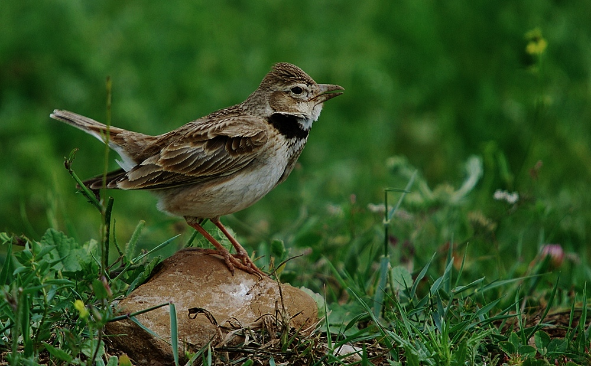

L'Alouette calandre est une grande alouette fortement charpentée, à queue relativement courte. Sa tête est munie
d'un gros bec à culmen nettement courbe. L'œil est largement cerclé de blanc, avec un trait loral sombre à
l'avant et un "sourcil" clair à l'arrière. La gorge est blanche et la base du cou porte un demi-collier noir
évident surmonté de blanc. La poitrine ocre est légèrement tachetée. Le ventre est blanc cassé. Les flancs des
oiseaux du sud de l'aire sont plus chauds. Les parties supérieures sont d'un brun moyen avec une barre brun
sombre sur les couvertures moyennes.
Vue de dessous en vol, elle montre un dessous d'aile très sombre avec le bord postérieur blanc. On peut voir
aussi les bords latéraux de la queue blancs mais de façon moins évidente.
Les pattes sont roses, avec un ongle postérieur de la taille du doigt.
Les deux sexes sont pratiquement similaires. Simplement, la tache noire du cou est plus réduite chez la femelle.
Le juvénile se distingue par un collier noir très réduit, voire absent, et des tectrices supérieures bordées
d'un ourlet pâle.
Taille : 20 cm
Envergure : 38 à 40 cm
Poids : 44 à 73 g
Longévité : 5 ans
Ordre : Passériformes
Famille : Alaudidés
Genre : Melanocorypha
Espèce : calandra
Le cri de contact de l'Alouette calandre est sec, roulé et nasillard : "tchrryup, klitrr".
Son chant rappelle celui de l'Alouette des champs mais en plus lent. Elle émet des sons gazouillés et aigus à un
rythme rapide. Elle alterne des notes flutées et d'autres à tonalité rauque. Au printemps, les mâles sont très
bruyants et chantent fort. Elle est une excellente imitatrice du chant des autres oiseaux.
Comme toutes les alouettes, elle chante surtout en vol mais elle chante aussi posée au sol, ce qui permet de
bien voir sa gorge noire et blanche gonflée faisant office de fanion.
On dit de l'Alouette calandre qu'elle grisolle, turlute ou tire-lire.